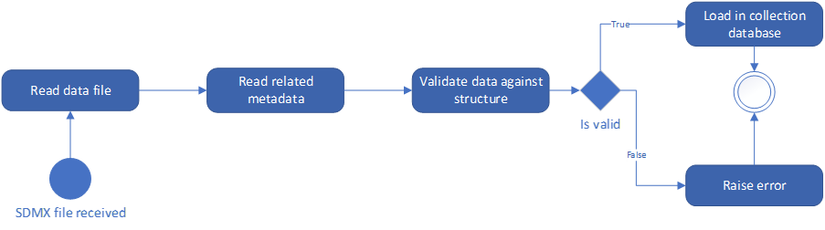
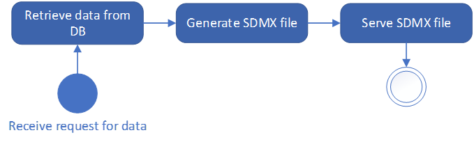

SDMXThon use cases introduction#
SDMXThon is an open-source Python library to manage SDMX Data and Metadata. It intends to provide a simple and effective way to integrate SDMX functionalities into Python.
SDMXThon provides simple APIs to read SDMX data into Pandas data frames, and to generate SDMX files from Pandas data frames. SDMXThon benefits from all the interfaces that Pandas has already built-in, which makes it a very powerful tool to integrate SDMX in already existing pipelines.
SDMXThon uses the version 2.1 of the Standard. Upgrade to version 3 will be done when the version of the standard will be more widely used.
SDMXThon functionalities#
SDMX Message reading#
SDMThon includes a simple method to read any sdmx file, regardless of whether it is a data or metadata file. The method can be called on stored files or urls.
import sdmxthon
message_metadata = sdmxthon.read_sdmx('input_data/bis_otc_outs.xml')
message_data = sdmxthon.read_sdmx('https://stats.bis.org/api/v1/data/BIS,WS_OTC_DERIV2,1.0/all/all?lastNObservations=3&detail=full')
print(message_metadata.type)
print(message_data.type)
MessageTypeEnum.Metadata
MessageTypeEnum.StructureDataSet
The payload of the messages is in an attribute of the message object:
print(message_metadata.payload)
print(message_data.payload)
{'OrganisationSchemes': {'SDMX:AGENCIES(1.0)': <AgencyScheme - SDMX:AGENCIES(1.0)>}, 'Codelists': {'BIS:CL_AVAILABILITY(1.0)': <Codelist - CL_AVAILABILITY>, 'BIS:CL_BIS_IF_REF_AREA(1.0)': <Codelist - CL_BIS_IF_REF_AREA>, 'BIS:CL_BIS_UNIT(1.0)': <Codelist - CL_BIS_UNIT>, 'BIS:CL_COLLECTION(1.0)': <Codelist - CL_COLLECTION>, 'BIS:CL_CONF_STATUS(1.0)': <Codelist - CL_CONF_STATUS>, 'BIS:CL_DECIMALS(1.0)': <Codelist - CL_DECIMALS>, 'BIS:CL_DER_BASIS(1.0)': <Codelist - CL_DER_BASIS>, 'BIS:CL_DER_INSTR(1.0)': <Codelist - CL_DER_INSTR>, 'BIS:CL_EX_METHOD(1.0)': <Codelist - CL_EX_METHOD>, 'BIS:CL_FREQ(1.0)': <Codelist - CL_FREQ>, 'BIS:CL_ISSUE_MAT(1.0)': <Codelist - CL_ISSUE_MAT>, 'BIS:CL_MARKET_RISK(1.0)': <Codelist - CL_MARKET_RISK>, 'BIS:CL_OBS_STATUS(1.0)': <Codelist - CL_OBS_STATUS>, 'BIS:CL_OD_TYPE(1.0)': <Codelist - CL_OD_TYPE>, 'BIS:CL_RATING(1.0)': <Codelist - CL_RATING>, 'BIS:CL_SECTOR_CPY(1.0)': <Codelist - CL_SECTOR_CPY>, 'BIS:CL_SECTOR_UDL(1.0)': <Codelist - CL_SECTOR_UDL>, 'BIS:CL_TIME_FORMAT(1.0)': <Codelist - CL_TIME_FORMAT>, 'BIS:CL_UNIT_MULT(1.0)': <Codelist - CL_UNIT_MULT>}, 'Concepts': {'BIS:STANDALONE_CONCEPT_SCHEME(1.0)': <ConceptScheme - BIS:STANDALONE_CONCEPT_SCHEME(1.0)>}, 'DataStructures': {'BIS:BIS_DER(1.0)': <DataStructureDefinition - BIS:BIS_DER(1.0)>}, 'Dataflows': {'BIS:WS_OTC_DERIV2(1.0)': <DataFlowDefinition - BIS:WS_OTC_DERIV2(1.0)>}, 'Constraints': {'BIS:OTCDO_NA_R(1.0)': <sdmxthon.model.definitions.ContentConstraint object at 0x000001BB3A5CE450>}, 'errors': []}
{'BIS:WS_OTC_DERIV2(1.0)': <DataSet - No Structure found>}
SDMX data functionalities#
The DataSet object has a series of SDMX-specific attributes. The data in the dataset are stored as a Pandas Dataframe, in the data attribute:
dataset = message_data.content['BIS:WS_OTC_DERIV2(1.0)']
dataset.data
| FREQ | DER_TYPE | DER_INSTR | DER_RISK | DER_REP_CTY | DER_SECTOR_CPY | DER_CPC | DER_SECTOR_UDL | DER_CURR_LEG1 | DER_CURR_LEG2 | DER_ISSUE_MAT | DER_RATING | DER_EX_METHOD | DER_BASIS | AVAILABILITY | COLLECTION | TIME_PERIOD | OBS_VALUE | OBS_STATUS | OBS_CONF | |
|---|---|---|---|---|---|---|---|---|---|---|---|---|---|---|---|---|---|---|---|---|
| 0 | H | T | W | T | 5J | N | 5J | A | TO1 | TO1 | A | B | 3 | A | K | S | 2021-S1 | 7955.000 | A | F |
| 1 | H | T | W | T | 5J | N | 5J | A | TO1 | TO1 | A | B | 3 | A | K | S | 2021-S2 | 12381.000 | A | F |
| 2 | H | T | W | T | 5J | N | 5J | A | TO1 | TO1 | A | B | 3 | A | K | S | 2022-S1 | 10363.000 | A | F |
| 3 | H | A | T | L | 5J | A | 5J | A | TO1 | TO1 | A | A | 3 | A | K | S | 2021-S1 | 284102.446 | A | F |
| 4 | H | A | T | L | 5J | A | 5J | A | TO1 | TO1 | A | A | 3 | A | K | S | 2021-S2 | 97640.002 | A | F |
| ... | ... | ... | ... | ... | ... | ... | ... | ... | ... | ... | ... | ... | ... | ... | ... | ... | ... | ... | ... | ... |
| 14862 | H | S | U | T | 5J | A | 5J | A | TO1 | TO1 | A | D | 3 | A | K | E | 2021-S2 | 350594.000 | A | F |
| 14863 | H | S | U | T | 5J | A | 5J | A | TO1 | TO1 | A | D | 3 | A | K | E | 2022-S1 | 308992.000 | A | F |
| 14864 | H | A | M | D | 5J | B | 5J | A | TO1 | CHF | A | A | 3 | C | K | S | 2021-S1 | 4714.702 | A | F |
| 14865 | H | A | M | D | 5J | B | 5J | A | TO1 | CHF | A | A | 3 | C | K | S | 2021-S2 | 4619.951 | A | F |
| 14866 | H | A | M | D | 5J | B | 5J | A | TO1 | CHF | A | A | 3 | C | K | S | 2022-S1 | 293.000 | A | F |
14867 rows × 20 columns
The generated data frame has one column for each component of the data structure of the dataset. This dataset does not have any data structure attached to it, since it has not been loaded:
print(dataset.structure)
None
By assigning a structure to the dataset, it is possible to validate the data against its structure:
dataset.structure = message_metadata.content['DataStructures']['BIS:BIS_DER(1.0)']
dataset.semantic_validation()
[]
If the dataset has structural errors, the output of the semantic_validation method is a list of dictionaries with the errors:
dataset.data['DER_BASIS'] = 'error'
dataset.semantic_validation()
[{'Code': 'SS08',
'ErrorLevel': 'WARNING',
'Component': 'DER_BASIS',
'Type': 'Dimension',
'Rows': None,
'Message': 'Value error not compliant with maxLength : 1'},
{'Code': 'SS04',
'ErrorLevel': 'CRITICAL',
'Component': 'DER_BASIS',
'Type': 'Dimension',
'Rows': None,
'Message': 'Wrong value error for dimension DER_BASIS'}]
The list of possible errors can be found in this link: https://docs.sdmxthon.meaningfuldata.eu/validations.html
From dataset objects it is possible to generate an SDMX v2.1 message, with any of the different modalities:
from sdmxthon.utils.enums import MessageTypeEnum
from datetime import datetime
dataset.to_xml(
message_type = MessageTypeEnum.StructureDataSet,
outputPath = 'structure_dataset_example.xml',
id_ = 'dataset_id',
test = 'false',
prepared = datetime.now(),
sender = 'MeaningfulData',
receiver = 'open',
prettyprint=True
)
SDMX metadata functionalities#
SDMXthon provides a simple way to navigate through the metadata. Using the content method on the Message class and the items method on each item Scheme we can access to the inner metadata classes.
concept_scheme = message_metadata.content['Concepts']['BIS:STANDALONE_CONCEPT_SCHEME(1.0)']
concept_scheme.items
{'TIME_FORMAT': <Concept - TIME_FORMAT>,
'ADJUST_CODED': <Concept - ADJUST_CODED>,
'AGG_EQUN': <Concept - AGG_EQUN>,
'AVAILABILITY': <Concept - AVAILABILITY>,
'BIS_BLOCK': <Concept - BIS_BLOCK>,
'BIS_DOC_DATE': <Concept - BIS_DOC_DATE>,
'BIS_SUFFIX': <Concept - BIS_SUFFIX>,
'BIS_TOPIC': <Concept - BIS_TOPIC>,
'BIS_UNIT': <Concept - BIS_UNIT>,
'BORROWERS_CTY': <Concept - BORROWERS_CTY>,
'BORROWER_NAT': <Concept - BORROWER_NAT>,
'BREAKS': <Concept - BREAKS>,
'CBS_BANK_TYPE': <Concept - CBS_BANK_TYPE>,
'CBS_BASIS': <Concept - CBS_BASIS>,
'CG_DTYPE': <Concept - CG_DTYPE>,
'CIBL_CATEGORY': <Concept - CIBL_CATEGORY>,
'CIBL_TABLE': <Concept - CIBL_TABLE>,
'CIBL_TYPE': <Concept - CIBL_TYPE>,
'COLLECTION': <Concept - COLLECTION>,
'COLLECTION_DETAIL': <Concept - COLLECTION_DETAIL>,
'COMPILATION': <Concept - COMPILATION>,
'COMPILING_ORG': <Concept - COMPILING_ORG>,
'COVERAGE': <Concept - COVERAGE>,
'COVERED_AREA': <Concept - COVERED_AREA>,
'CPSS_DATA_TYPE': <Concept - CPSS_DATA_TYPE>,
'CPSS_REP_CCY': <Concept - CPSS_REP_CCY>,
'CPSS_REP_COUNTRY': <Concept - CPSS_REP_COUNTRY>,
'CPSS_TABLE': <Concept - CPSS_TABLE>,
'CTY_TYPE': <Concept - CTY_TYPE>,
'CURR_TYPE_BOOK': <Concept - CURR_TYPE_BOOK>,
'DATA_COMP': <Concept - DATA_COMP>,
'DECIMALS': <Concept - DECIMALS>,
'DER_BASIS': <Concept - DER_BASIS>,
'DER_CPC': <Concept - DER_CPC>,
'DER_CURR_LEG1': <Concept - DER_CURR_LEG1>,
'DER_CURR_LEG2': <Concept - DER_CURR_LEG2>,
'DER_EX_METHOD': <Concept - DER_EX_METHOD>,
'DER_INSTR': <Concept - DER_INSTR>,
'DER_ISSUE_MAT': <Concept - DER_ISSUE_MAT>,
'DER_RATING': <Concept - DER_RATING>,
'DER_REP_CTY': <Concept - DER_REP_CTY>,
'DER_RISK': <Concept - DER_RISK>,
'DER_SECTOR_CPY': <Concept - DER_SECTOR_CPY>,
'DER_SECTOR_UDL': <Concept - DER_SECTOR_UDL>,
'DER_TYPE': <Concept - DER_TYPE>,
'DOC_METHOD': <Concept - DOC_METHOD>,
'DOM_SER_IDS': <Concept - DOM_SER_IDS>,
'DSR_BORROWERS': <Concept - DSR_BORROWERS>,
'D_CPART_TR_H': <Concept - D_CPART_TR_H>,
'D_CURR_H': <Concept - D_CURR_H>,
'D_EUS_MAT_H': <Concept - D_EUS_MAT_H>,
'D_INSTR_H': <Concept - D_INSTR_H>,
'D_VOL_H': <Concept - D_VOL_H>,
'EER_BASKET': <Concept - EER_BASKET>,
'EER_TYPE': <Concept - EER_TYPE>,
'FREQ': <Concept - FREQ>,
'I2A_ACC_STD': <Concept - I2A_ACC_STD>,
'I2A_CODE': <Concept - I2A_CODE>,
'I2A_CONS_PERI': <Concept - I2A_CONS_PERI>,
'I2A_CONTRACT_TYPE': <Concept - I2A_CONTRACT_TYPE>,
'I2A_CURRENCY': <Concept - I2A_CURRENCY>,
'I2A_CURRENCY_LEG1': <Concept - I2A_CURRENCY_LEG1>,
'I2A_CURRENCY_LEG2': <Concept - I2A_CURRENCY_LEG2>,
'I2A_INST': <Concept - I2A_INST>,
'I2A_MEASURE': <Concept - I2A_MEASURE>,
'I2A_POS_TYPE': <Concept - I2A_POS_TYPE>,
'IBLN_CATEGORY': <Concept - IBLN_CATEGORY>,
'IBLN_TABLE': <Concept - IBLN_TABLE>,
'IBLN_TYPE': <Concept - IBLN_TYPE>,
'IBLR_CATEGORY': <Concept - IBLR_CATEGORY>,
'IBLR_CURR': <Concept - IBLR_CURR>,
'IBLR_TYPE': <Concept - IBLR_TYPE>,
'ICM_CURRENCY': <Concept - ICM_CURRENCY>,
'IF_REF_AREA': <Concept - IF_REF_AREA>,
'ISSUER_BUS_IMM': <Concept - ISSUER_BUS_IMM>,
'ISSUER_BUS_ULT': <Concept - ISSUER_BUS_ULT>,
'ISSUER_CTY': <Concept - ISSUER_CTY>,
'ISSUER_NAT': <Concept - ISSUER_NAT>,
'ISSUER_RES': <Concept - ISSUER_RES>,
'ISSUE_COL': <Concept - ISSUE_COL>,
'ISSUE_CUR': <Concept - ISSUE_CUR>,
'ISSUE_CUR_GROUP': <Concept - ISSUE_CUR_GROUP>,
'ISSUE_OR_MAT': <Concept - ISSUE_OR_MAT>,
'ISSUE_RATE': <Concept - ISSUE_RATE>,
'ISSUE_RE_MAT': <Concept - ISSUE_RE_MAT>,
'ISSUE_RISK': <Concept - ISSUE_RISK>,
'ISSUE_TYPE': <Concept - ISSUE_TYPE>,
'JD_CATEGORY': <Concept - JD_CATEGORY>,
'JD_TYPE': <Concept - JD_TYPE>,
'LOCATION': <Concept - LOCATION>,
'L_BIS_SUFF': <Concept - L_BIS_SUFF>,
'L_BIS_TOP_H': <Concept - L_BIS_TOP_H>,
'L_CP_COUNTRY': <Concept - L_CP_COUNTRY>,
'L_CP_SECTOR': <Concept - L_CP_SECTOR>,
'L_CURR_TYPE': <Concept - L_CURR_TYPE>,
'L_DENOM': <Concept - L_DENOM>,
'L_INSTR': <Concept - L_INSTR>,
'L_MEASURE': <Concept - L_MEASURE>,
'L_PARENT_CTY': <Concept - L_PARENT_CTY>,
'L_POSITION': <Concept - L_POSITION>,
'L_POS_TYPE': <Concept - L_POS_TYPE>,
'L_REP_BANK_TYPE': <Concept - L_REP_BANK_TYPE>,
'L_REP_CTY': <Concept - L_REP_CTY>,
'MARKET': <Concept - MARKET>,
'MEASURE': <Concept - MEASURE>,
'MEASURE_DETAIL': <Concept - MEASURE_DETAIL>,
'META_UPDATE': <Concept - META_UPDATE>,
'METHOD_REF': <Concept - METHOD_REF>,
'MS_CURRENCY': <Concept - MS_CURRENCY>,
'MS_MEASURE': <Concept - MS_MEASURE>,
'MS_REP_COUNTRY': <Concept - MS_REP_COUNTRY>,
'MS_TOPIC': <Concept - MS_TOPIC>,
'NAT_TITLE': <Concept - NAT_TITLE>,
'OBS_COM': <Concept - OBS_COM>,
'OBS_CONF': <Concept - OBS_CONF>,
'OBS_PRE_BREAK': <Concept - OBS_PRE_BREAK>,
'OBS_STATUS': <Concept - OBS_STATUS>,
'OBS_VALUE': <Concept - OBS_VALUE>,
'OD_CPARTY': <Concept - OD_CPARTY>,
'OD_CURR_MAT_REG': <Concept - OD_CURR_MAT_REG>,
'OD_INSTR': <Concept - OD_INSTR>,
'OD_REP_CTY': <Concept - OD_REP_CTY>,
'OD_RISK_CAT': <Concept - OD_RISK_CAT>,
'OD_TYPE': <Concept - OD_TYPE>,
'ORG_VISIBILITY': <Concept - ORG_VISIBILITY>,
'PRICED_UNIT': <Concept - PRICED_UNIT>,
'PS_INFO_TYPE': <Concept - PS_INFO_TYPE>,
'PS_SECTOR': <Concept - PS_SECTOR>,
'PS_SYSTEMS': <Concept - PS_SYSTEMS>,
'PS_TRANS_TYPE': <Concept - PS_TRANS_TYPE>,
'PUBLICATIONS': <Concept - PUBLICATIONS>,
'REF_AREA': <Concept - REF_AREA>,
'REM_MATURITY': <Concept - REM_MATURITY>,
'REP_CTY': <Concept - REP_CTY>,
'REP_DELAY': <Concept - REP_DELAY>,
'RE_TYPE': <Concept - RE_TYPE>,
'RE_VINTAGE': <Concept - RE_VINTAGE>,
'RPI_INFO_TYPE': <Concept - RPI_INFO_TYPE>,
'RPI_INSTRUMENT': <Concept - RPI_INSTRUMENT>,
'RPI_TERM_AND_OP': <Concept - RPI_TERM_AND_OP>,
'SECTOR_PARTICIPANT': <Concept - SECTOR_PARTICIPANT>,
'SEC_INFO_TYPE': <Concept - SEC_INFO_TYPE>,
'SEC_INSTR': <Concept - SEC_INSTR>,
'SEC_INSTRUMENT': <Concept - SEC_INSTRUMENT>,
'SEC_ISSUER': <Concept - SEC_ISSUER>,
'SEC_SUFFIX': <Concept - SEC_SUFFIX>,
'SEC_SYSTEM': <Concept - SEC_SYSTEM>,
'SEC_TYPE': <Concept - SEC_TYPE>,
'SOURCE_REF': <Concept - SOURCE_REF>,
'SOURCE_TYPE': <Concept - SOURCE_TYPE>,
'SYN_CR_PURPOSE': <Concept - SYN_CR_PURPOSE>,
'TC_ADJUST': <Concept - TC_ADJUST>,
'TC_BORROWERS': <Concept - TC_BORROWERS>,
'TC_LENDERS': <Concept - TC_LENDERS>,
'TIME_PERIOD': <Concept - TIME_PERIOD>,
'TITLE': <Concept - TITLE>,
'TITLE_COMPL': <Concept - TITLE_COMPL>,
'TITLE_GRP': <Concept - TITLE_GRP>,
'TITLE_GRP_COMPL': <Concept - TITLE_GRP_COMPL>,
'TITLE_GRP_NAT': <Concept - TITLE_GRP_NAT>,
'TITLE_TS': <Concept - TITLE_TS>,
'TYPE_ADJUST': <Concept - TYPE_ADJUST>,
'UNIT_DETAIL': <Concept - UNIT_DETAIL>,
'UNIT_MEASURE': <Concept - UNIT_MEASURE>,
'UNIT_MULT': <Concept - UNIT_MULT>,
'UNIT_TYPE': <Concept - UNIT_TYPE>,
'VALUATION': <Concept - VALUATION>,
'VALUE': <Concept - VALUE>,
'VIS_CTY': <Concept - VIS_CTY>,
'XD_EXCHANGE': <Concept - XD_EXCHANGE>,
'CURR_DENOM': <Concept - CURR_DENOM>,
'LENDERS_SECTOR': <Concept - LENDERS_SECTOR>,
'BORROWERS_SECTOR': <Concept - BORROWERS_SECTOR>,
'ISSUER_CTY_RES': <Concept - ISSUER_CTY_RES>,
'ISSUER_SECTOR': <Concept - ISSUER_SECTOR>,
'CURRENCY': <Concept - CURRENCY>,
'DEVICE_TYPE': <Concept - DEVICE_TYPE>,
'FUNCTION': <Concept - FUNCTION>,
'SUB_FUNCTION': <Concept - SUB_FUNCTION>,
'TECHNOLOGY': <Concept - TECHNOLOGY>,
'ISSUER': <Concept - ISSUER>,
'COMMENT_TS': <Concept - COMMENT_TS>,
'INDICATOR': <Concept - INDICATOR>,
'INSTITUTION_TYPE': <Concept - INSTITUTION_TYPE>,
'COMMENT_OBS': <Concept - COMMENT_OBS>,
'TABLE': <Concept - TABLE>,
'SUPP_INFO_BREAKS': <Concept - SUPP_INFO_BREAKS>,
'SYSTEM_TYPE': <Concept - SYSTEM_TYPE>,
'SYSTEM': <Concept - SYSTEM>,
'OTHER_PS_TRANS': <Concept - OTHER_PS_TRANS>,
'TYPE_OF_INFO': <Concept - TYPE_OF_INFO>,
'RTBL': <Concept - RTBL>,
'REJURI': <Concept - REJURI>,
'RESECT': <Concept - RESECT>,
'CTYPE': <Concept - CTYPE>,
'MSTRAD': <Concept - MSTRAD>,
'MSCLEAR': <Concept - MSCLEAR>,
'COLMGMT': <Concept - COLMGMT>,
'COLRUSE': <Concept - COLRUSE>,
'COLTYPE': <Concept - COLTYPE>,
'COLQUAL': <Concept - COLQUAL>,
'COLJURI': <Concept - COLJURI>,
'COLCRCL': <Concept - COLCRCL>,
'FUNDSRC': <Concept - FUNDSRC>,
'RHMB': <Concept - RHMB>,
'MAT': <Concept - MAT>,
'CP_JURI': <Concept - CP_JURI>,
'INSTRUMENT_TYPE': <Concept - INSTRUMENT_TYPE>,
'CCUR': <Concept - CCUR>,
'CMAT': <Concept - CMAT>,
'COLCUR': <Concept - COLCUR>,
'COLMAT': <Concept - COLMAT>,
'MRGACC': <Concept - MRGACC>,
'DIRECTION': <Concept - DIRECTION>,
'INSTITUTION_RES': <Concept - INSTITUTION_RES>,
'DEVICE_STATE': <Concept - DEVICE_STATE>,
'PAYMT_PROPERTY': <Concept - PAYMT_PROPERTY>,
'PART_SECT': <Concept - PART_SECT>,
'OLD_TABLE': <Concept - OLD_TABLE>,
'PART_TYPE': <Concept - PART_TYPE>,
'TERMINAL_LOC': <Concept - TERMINAL_LOC>,
'INITIATION_DEV': <Concept - INITIATION_DEV>,
'CARD_TYPE': <Concept - CARD_TYPE>,
'TERMINAL_TYPE': <Concept - TERMINAL_TYPE>,
'WITH_AND_DEP': <Concept - WITH_AND_DEP>,
'CARD_FCT': <Concept - CARD_FCT>,
'PAYMT_SPEED': <Concept - PAYMT_SPEED>,
'DEV_STATE_TECH': <Concept - DEV_STATE_TECH>,
'CARD_ISS_LOC': <Concept - CARD_ISS_LOC>,
'ISSUER_OR_ONUS': <Concept - ISSUER_OR_ONUS>,
'CONF_STATUS': <Concept - CONF_STATUS>,
'POS_CUR': <Concept - POS_CUR>,
'REP_AGENCY': <Concept - REP_AGENCY>,
'BUS_HOLIDAY': <Concept - BUS_HOLIDAY>,
'STOCK_EXCHANGE': <Concept - STOCK_EXCHANGE>,
'COLPOSTYPE': <Concept - COLPOSTYPE>}
Data Structure Definitions can be accessed in a similar way:
dsd = message_metadata.content['DataStructures']['BIS:BIS_DER(1.0)']
dsd.content
{'dimensions': {'FREQ': <Dimension - FREQ>,
'DER_TYPE': <Dimension - DER_TYPE>,
'DER_INSTR': <Dimension - DER_INSTR>,
'DER_RISK': <Dimension - DER_RISK>,
'DER_REP_CTY': <Dimension - DER_REP_CTY>,
'DER_SECTOR_CPY': <Dimension - DER_SECTOR_CPY>,
'DER_CPC': <Dimension - DER_CPC>,
'DER_SECTOR_UDL': <Dimension - DER_SECTOR_UDL>,
'DER_CURR_LEG1': <Dimension - DER_CURR_LEG1>,
'DER_CURR_LEG2': <Dimension - DER_CURR_LEG2>,
'DER_ISSUE_MAT': <Dimension - DER_ISSUE_MAT>,
'DER_RATING': <Dimension - DER_RATING>,
'DER_EX_METHOD': <Dimension - DER_EX_METHOD>,
'DER_BASIS': <Dimension - DER_BASIS>,
'TIME_PERIOD': <TimeDimension - TIME_PERIOD>},
'measure': <PrimaryMeasure - OBS_VALUE>,
'attributes': {'TIME_FORMAT': <Attribute - TIME_FORMAT>,
'OBS_STATUS': <Attribute - OBS_STATUS>,
'AVAILABILITY': <Attribute - AVAILABILITY>,
'COLLECTION': <Attribute - COLLECTION>,
'DECIMALS': <Attribute - DECIMALS>,
'UNIT_MEASURE': <Attribute - UNIT_MEASURE>,
'UNIT_MULT': <Attribute - UNIT_MULT>,
'OBS_CONF': <Attribute - OBS_CONF>,
'OBS_PRE_BREAK': <Attribute - OBS_PRE_BREAK>,
'TITLE_TS': <Attribute - TITLE_TS>},
'groups': <GroupDimensionDescriptor - Sibling>}
Core sdmx.io use cases#
Modelling#
Data modelling is better done through a user interface and persisting information into a database. SDMXThon is not providing either, and it does not intend to substitute or compete with proper tools for modelling purposes, like Fusion Metadata Registry. Still, SDMXTHon can provide some functionalities for quick prototyping, due to its simple API to explore and manipulate metadata, as well as the method to generate SDMX-ML messages for the data structures.
Collection#
Data collection involves the reception and integration of data from multiple providers. SDMX enables automated data collection by providing standard formats to change metadata and data.
The following chart represents a typical collection process:

A system receives an SDMX data file. The file is read, so that the data are loaded, and the related structure is obtained. Once the structure of the data is known, it is possible to validate that the data are following their required structure. Finally, if data are structurally correct, the data in the instance shall be loaded into the collection database. SDMXThon provides support to all the steps in the use case, as demonstrated with the following example.
SDMXThon allows reading SDMX instances from stored files or from the web. It can also get as input a string or BytesIO object, facilitating integration if the data reception system is written in Python.
import sdmxthon
instance = sdmxthon.read_sdmx('input_data/data.xml')
An SDMX message may contain metadata or data. The ‘type’ attribute for Message objects returns the message type, which in this case is a Structure Specific DataSet. Because it is a data file, the content of the message returns the datasets included in the file as a dictionary, with the ID of the dataflow as key.
print(instance.type)
print(instance.content.keys())
dataset = instance.content['BIS:BIS_DER(1.0)']
MessageTypeEnum.StructureDataSet
dict_keys(['BIS:BIS_DER(1.0)'])
Once the related data structure is known, we can load it by calling a webservice (implemented, for instance, by FMR). With the metadata, it is possible to perform the structural validation of the metadata.
metadata = sdmxthon.read_sdmx('https://stats.bis.org/api/v1/datastructure/BIS/BIS_DER/1.0?references=all&detail=full')
dataset.structure = metadata.content['DataStructures']['BIS:BIS_DER(1.0)']
dataset.semantic_validation()
[]
An empty list as a result of the validation means that there are no structural errors. So this means that data can be loaded into the db. The data loading depends on the specific system and its underlying datamodel. But the advantage of using Pandas is that it includes a method to write into databases, with several different RDBMS supported.
Production#
The production phase of the statistical process changes from institution to institution. But, in any case, it typically involves consistency validation (in some cases done during the collection phase) and data derivation (e.g., aggregates or calculation of new data). SDMXThon can support the statistical production by providing all the calculation capabilities included in Pandas. Because of Pandas, virtually any calculation (for validation or derivation purposes) in the production process can be done. In any case, for a production process, we strongly recommend the use of the Validation and Transformation Language (VTL). meaningfulData offers a proprietary Python library for this language, on top of some other relevant functionalities for VTL. Please refer to the example in section 4 for an explanation on how SDMXThon ca be used for data production.
Dissemination#
As with data modelling, data dissemination requires of a full system including data stored in databases and interfaces (GUIs and APIs). SDMXThon is not providing any of those, but can be used to develop a dissemination system in Python. The following chart represents a simplified version of a dissemination service:

Essentially, dissemination is the process of allowing users (human or machines) to request some data, with certain filters, and responding with the data required. To do this, it is necessary to have a system able to receive the request for data, get the data from the database, serialize them into the required format (SDMX), and serve the response. SDMXThon provides a simple interface to perform these tasks. Connection to most RDBMS is supported, which allows retrieving the required data. Once the data are loaded, the SDMX file is generated with a simple method, and can be passed as a file or StringIO to the serving system. In any case, such a dissemination system would need to be built, and it is not provided by SDMXThon. The other side of data dissemination is data analysis. Data are disseminated because some user are going to use this data for some analytical purpose (or to calculate new information to be analysed). Given that Pandas is one of the most relevant libraries for data science and data analysis, the simple interface SDMXThon is providing to retrieve the required data enables any data analyst with no or limited SDMX knowledge to benefit from all the functionalities SDMX offers.
Integration with Fusion Metadata Registry#
SDMXThon does only provide an API to interact with SDMX data and metadata with Python, using SDMX-ML as an interface, but it does not provide any repository to store metadata and data, or any graphical interface or tool to manage information. Therefore, use of SDMXThon within statistical organisations must be seen as a complementary tool to facilitate data access, processing and analysing, but requiring a tool for SDMX metadata management, and a system for storing data. FMR is a natural candidate for this kind of use. Because FMR offers a REST API, not only to serve metadata, but also to perform actions, the integration between SDMXThon and FMR is quite simple, even if they are built using different technologies. The comprehensive example in next section shows how FMR can be used together with SDMXThon.
Comprehensive example#
This example demonstrates how SDMXThon can be used to produce SDMX data from a CSV file.
Let’s suppose that we have some data stored in a CSV file, which correspond to a dataflow following the BIS_DER datastructure from the BIS.
We can create a Dataset object in SDMXThon, and load this CSV data and the related metadata:
import sdmxthon
from sdmxthon.model.dataset import Dataset
data_instance = Dataset()
data_instance.read_csv('input_data/input_data.csv')
metadata = sdmxthon.read_sdmx('https://stats.bis.org/api/v1/datastructure/BIS/BIS_DER/1.0?references=all&detail=full')
data_instance.structure = metadata.content['DataStructures']['BIS:BIS_DER(1.0)']
SDMXThon provides a method to do a structural validation of the data against the metadata:
import json
validation_results = data_instance.semantic_validation()
print (f'The dataset has {len(validation_results)} errors:\n {[error["Message"] for error in validation_results]}')
The dataset has 3 errors:
['Missing value in measure OBS_VALUE', 'Missing FREQ', 'Missing OBS_STATUS']
Thus, the dataset is incorrect, because there are some empty values, and the dimension ‘FREQ’ and the mandatory attribute ‘OBS_STATUS’ are missing. It is possible to use Pandas to correct the dataset:
data_instance.data['OBS_VALUE'] = data_instance.data['OBS_VALUE'].fillna(0)
data_instance.data['FREQ'] = 'H'
data_instance.data['OBS_STATUS'] = 'A'
validation_results = data_instance.semantic_validation()
print (f'The dataset has {len(validation_results)} errors:\n {[error["Message"] for error in validation_results]}')
The dataset has 0 errors:
[]
Let’s now suppose that we want to validate that each observation is within 50% of the observation for the previous period. Again, we can use Panda’s capabilities to perform these validations:
#Get list of dimensions excluding TIME_PERIOD:
dimension_descriptor = data_instance.structure.dimension_descriptor.components
dimenension_list = [key for key in dimension_descriptor]
dimenension_list.remove('TIME_PERIOD')
# Add a field with the previous value of the series:
data_instance.data["previous_value"] = \
data_instance.data.sort_values("TIME_PERIOD").groupby(dimenension_list)\
["OBS_VALUE"].shift(1)
# Get if value is between the percentage of the previous value:
data_instance.data["val_result"] = data_instance.data["previous_value"] / data_instance.data["OBS_VALUE"]
errors = data_instance.data[~data_instance.data["val_result"].between(0.8, 1.2)].dropna()
#Drop inmaterial observations (previous or current below 1000):
errors = errors[(errors['previous_value'] > 1000) | (errors['OBS_VALUE'] > 1000)]
print(len(data_instance.data))
print(len(errors))
errors.to_csv('error.csv')
9914
1818
SDMXThon provides a method to simply generate an SDMX-ML message from a Dataset object. The message is generated as a StringIO object, but it is also possible to set a path to save the data as a file.
data_instance.to_xml(outputPath='output_data/output_data.xml')
print(data_instance.to_xml().getvalue()[:3000])
<?xml version="1.0" encoding="UTF-8"?>
<mes:StructureSpecificData xmlns:xsi="http://www.w3.org/2001/XMLSchema-instance" xmlns:mes="http://www.sdmx.org/resources/sdmxml/schemas/v2_1/message" xmlns:ss="http://www.sdmx.org/resources/sdmxml/schemas/v2_1/data/structurespecific" xmlns:ns1="urn:sdmx:org.sdmx.infomodel.datastructure.DataStructure=BIS:BIS_DER(1.0):ObsLevelDim:AllDimensions" xmlns:com="http://www.sdmx.org/resources/sdmxml/schemas/v2_1/common" xsi:schemaLocation="http://www.sdmx.org/resources/sdmxml/schemas/v2_1/message https://registry.sdmx.org/schemas/v2_1/SDMXMessage.xsd">
<mes:Header>
<mes:ID>test</mes:ID>
<mes:Test>true</mes:Test>
<mes:Prepared>2023-03-24T09:41:39</mes:Prepared>
<mes:Sender id="Unknown"/>
<mes:Receiver id="Not_supplied"/>
<mes:Structure structureID="BIS_DER" namespace="urn:sdmx:org.sdmx.infomodel.datastructure.DataStructure=BIS:BIS_DER(1.0)" dimensionAtObservation="AllDimensions">
<com:Structure>
<Ref agencyID="BIS" id="BIS_DER" version="1.0" class="DataStructure"/>
</com:Structure>
</mes:Structure>
<mes:Source xml:lang="en">SDMXthon</mes:Source>
</mes:Header>
<mes:DataSet ss:structureRef="BIS_DER" xsi:type="ns1:DataSetType" ss:dataScope="DataStructure" action="Replace">
<Obs DER_TYPE="T" DER_INSTR="W" DER_RISK="T" DER_REP_CTY="5J" DER_SECTOR_CPY="N" DER_CPC="5J" DER_SECTOR_UDL="A" DER_CURR_LEG1="TO1" DER_CURR_LEG2="TO1" DER_ISSUE_MAT="A" DER_RATING="B" DER_EX_METHOD="3" DER_BASIS="A" AVAILABILITY="K" COLLECTION="S" TIME_PERIOD="2021-S2" OBS_VALUE="12381.0" FREQ="H" OBS_STATUS="A" previous_value="" val_result="" />
<Obs DER_TYPE="T" DER_INSTR="W" DER_RISK="T" DER_REP_CTY="5J" DER_SECTOR_CPY="N" DER_CPC="5J" DER_SECTOR_UDL="A" DER_CURR_LEG1="TO1" DER_CURR_LEG2="TO1" DER_ISSUE_MAT="A" DER_RATING="B" DER_EX_METHOD="3" DER_BASIS="A" AVAILABILITY="K" COLLECTION="S" TIME_PERIOD="2022-S1" OBS_VALUE="10363.0" FREQ="H" OBS_STATUS="A" previous_value="12381.0" val_result="1.1947312554279648" />
<Obs DER_TYPE="A" DER_INSTR="T" DER_RISK="L" DER_REP_CTY="5J" DER_SECTOR_CPY="A" DER_CPC="5J" DER_SECTOR_UDL="A" DER_CURR_LEG1="TO1" DER_CURR_LEG2="TO1" DER_ISSUE_MAT="A" DER_RATING="A" DER_EX_METHOD="3" DER_BASIS="A" AVAILABILITY="K" COLLECTION="S" TIME_PERIOD="2021-S2" OBS_VALUE="97640.002" FREQ="H" OBS_STATUS="A" previous_value="" val_result="" />
<Obs DER_TYPE="A" DER_INSTR="T" DER_RISK="L" DER_REP_CTY="5J" DER_SECTOR_CPY="A" DER_CPC="5J" DER_SECTOR_UDL="A" DER_CURR_LEG1="TO1" DER_CURR_LEG2="TO1" DER_ISSUE_MAT="A" DER_RATING="A" DER_EX_METHOD="3" DER_BASIS="A" AVAILABILITY="K" COLLECTION="S" TIME_PERIOD="2022-S1" OBS_VALUE="122347.497" FREQ="H" OBS_STATUS="A" previous_value="97640.002" val_result="0.7980547570989539" />
<Obs DER_TYPE="A" DER_INSTR="V" DER_RISK="T" DER_REP_CTY="5J" DER_SECTOR_CPY="M" DER_CPC="5J" DER_SECTOR_UDL="A" DER_CURR_LEG1="TO1" DER_CURR_LEG2="TO1" DER_ISSUE_MAT="A" DER_RATING="B" DER_EX_METHOD="3" DER_BASIS="C" AVAILABILITY="K" COLLECTION="S" TIME_PERIOD="2021-S2" OBS_VALUE=
We can also make use of the FMR web service to validate the generated data:
import requests
url = "http://127.0.0.1:8080/ws/public/data/load"
files = {'uploadFile': open('output_data/output_data.xml','rb')}
validate_request = requests.post(url, files=files)
print(validate_request.text)
{"Success":true,"uid":"78e280ca-aeab-4c1b-b932-f6b177f46f2b"}
import time
url = "http://127.0.0.1:8080/ws/public/data/loadStatus"
uid = json.loads(validate_request.text)['uid']
time.sleep(3) # Wait for the validation to finish
result_request = requests.get(f'{url}?uid={uid}')
result = json.loads(result_request.text)
print(result['Datasets'][0]['ValidationReport'][:2])
[{'Type': 'MandatoryAttributes', 'Errors': [{'ErrorCode': 'REG-201-051', 'Message': "Missing mandatory attribute 'DECIMALS'", 'Dataset': 0, 'ComponentId': 'DECIMALS', 'Position': 'Dataset'}, {'ErrorCode': 'REG-201-051', 'Message': "Missing mandatory attribute 'UNIT_MEASURE'", 'Dataset': 0, 'ComponentId': 'UNIT_MEASURE', 'Position': 'Dataset'}, {'ErrorCode': 'REG-201-051', 'Message': "Missing mandatory attribute 'UNIT_MULT'", 'Dataset': 0, 'ComponentId': 'UNIT_MULT', 'Position': 'Dataset'}]}, {'Type': 'FormatSpecific', 'Errors': [{'ErrorCode': '-', 'Message': "Unexpected attribute 'previous_value' for element 'StructureSpecificData/DataSet/Obs'", 'Dataset': 0, 'Position': 'Dataset'}, {'ErrorCode': '-', 'Message': "Unexpected attribute 'val_result' for element 'StructureSpecificData/DataSet/Obs'", 'Dataset': 0, 'Position': 'Dataset'}]}]